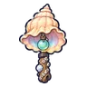

ปูหินโล่ใหญ่
มอนธาตุน้ำ Lv 28–34
เจอที่
| แมพ | โซน | Lv | ภูมิภาค |
|---|---|---|---|
| น้ำตกหิ่งห้อย | แอ่งน้ำตก | 28–34 | ป่ากองไฟ |
| น้ำตกขั้นบันได | ขั้นบันไดน้ำตก | 28–34 | ป่ากองไฟ |
| ถ้ำหลังม่านน้ำ | ม่านน้ำตกใหญ่ | 28–34 | ป่ากองไฟ |
| ยอดน้ำตกหมอกลอย | กองหินบนขอบผา | 28–34 | ป่ากองไฟ |
| หอรากมืด (Dark Root) | รากจมน้ำ | 43–52 |
ค่าสถานะตามเลเวล
| Lv | HP | ATK | DEF | MDEF | EXP | Job |
|---|---|---|---|---|---|---|
| 28 | 3,152 | 47–69 | 17 | 5 | 42 | 32 |
| 31 | 3,917 | 52–78 | 19 | 6 | 46 | 35 |
| 34 | 4,980 | 60–91 | 20 | 6 | 50 | 38 |
ตีด้วยธาตุไหนดี
แรงขึ้น: ลม ×1.75
เบาลง: ไฟ ×0.5 น้ำ ×0.25
วัตถุดิบที่ดรอป
| ของ | โอกาส | |
|---|---|---|
| ก้ามปูหินใหญ่ | 55% | 1 ชิ้น (15% ได้ 2) |
อุปกรณ์ที่ดรอป (5)
| ของ | โอกาส |
|---|---|
| 0.25% | |
| 0.25% | |
| 0.25% | |
| 0.12% | |
 กระดิ่งวิญญาณเปลือกหอยเกลียว | 0.06% |
สกิล
หนามสะท้อน (Lv 25+) · หนามสะท้อน (Lv 60+) · ยิงไกล (Lv 60+)